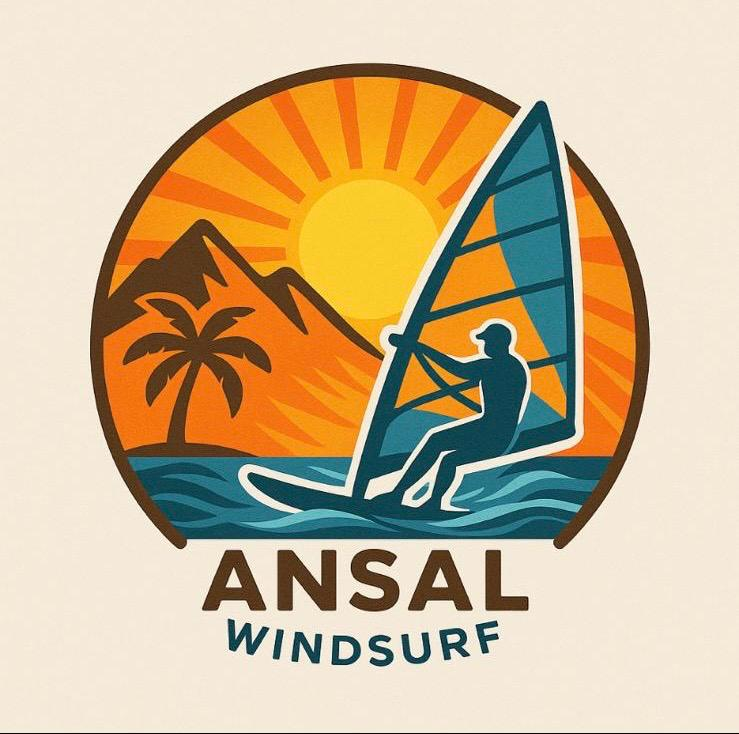
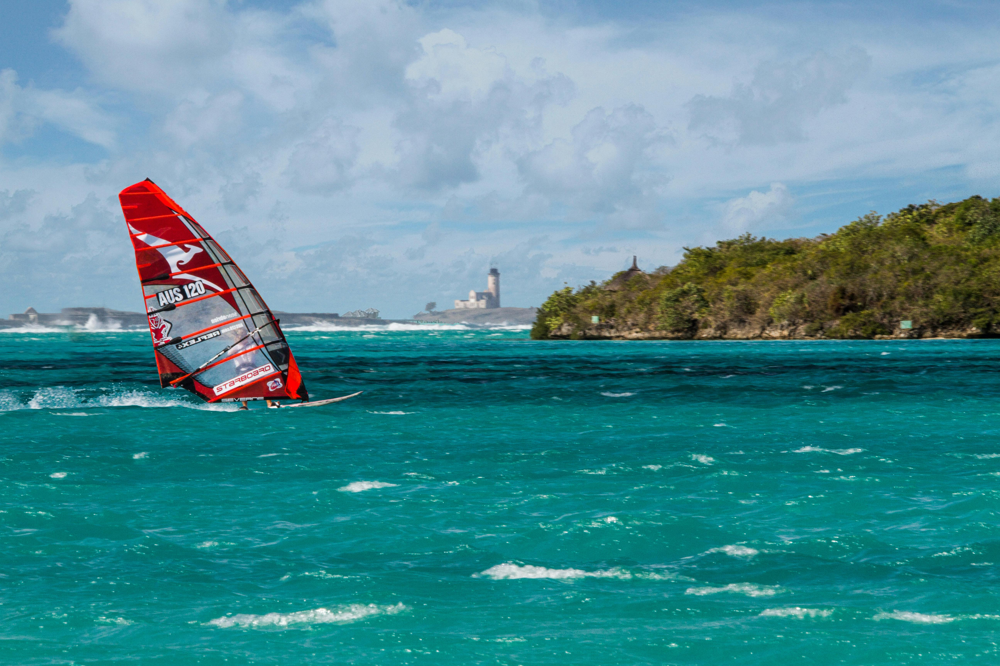
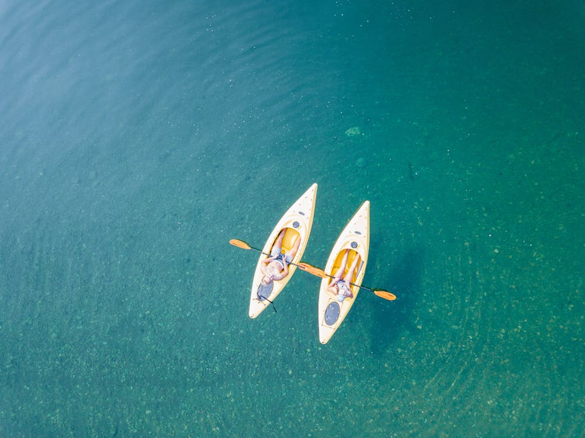

Ansal WindSurf

WindSurf (Rüzgar Sörfü)
Rüzgâr sörfü (windsurf), sörf tahtası ve yelken kullanarak rüzgârın gücüyle su üzerinde ilerlemeyi sağlayan heyecan verici bir su sporudur; dalgalara ihtiyaç duymadan rüzgârı itici güç olarak kullanır ve sporcu vücuduyla dengeyi sağlar. Fiziksel koşulları uygun 7'den 70'e her yaştan insan, uygun bir rüzgâr sörfü kursuyla temel teknikleri öğrendikten sonra bu eşsiz deneyimi yaşayabilir ve ister hobi ister spor amaçlı sürdürebilir.

SUP (Kürekli Sörf)
Stand Up Paddle (SUP), Türkçede kürek sörfü olarak da bilinen son derece eğlenceli bir su sporudur. Bu branşta geniş bir sörf tahtası (paddle board) üzerinde ayakta durarak uzun bir kürek yardımıyla suyun üzerinde ilerlenir. Genellikle göl, sakin deniz veya yavaş akışlı nehir gibi durgun sularda yapıldığı için başlangıç seviyesindekiler tarafından bile kolaylıkla öğrenilebilir ve her yaş grubundan katılımcıya uygundur.

Kano (Kayak)
Kano sporu, bir veya birkaç kişinin uzun ve dar bir kano teknesinde kürek çekerek su üzerinde ilerlediği keyifli bir su sporudur. Durgun göllerden sakin akan nehirlere ve deniz kıyılarına kadar farklı sularda yapılabilen kano, birkaç temel kürek tekniği öğrenildikten sonra hemen herkesin deneyimleyebileceği bir aktivitedir. Düzenli kano yapmak kol, omuz ve sırt kaslarını güçlendirir; kürek çekme hareketleri kardiyovasküler dayanıklılığı artırır ve denge ile koordinasyon becerilerini geliştirir.
Okulumuz, 7'den 70'e, asgari 8 yaşından itibaren herkesi beklemektedir. Rüzgar sörfü, güçlü fizik gerektirmeyen, aksine vücuttaki tüm kasları geliştiren ve zihinsel zindelik veren bir spordur. Bu sporu öğrenmek için sadece 5 saatlik acemi eğitimi yeterlidir , hatta bir saat içinde su üzerinde hareket etmeye başlayabilirsiniz. Rüzgarsız günlerde ise kürekli rüzgar sörfü (SUP) ve Kano gibi alternatiflerle denizin tadını çıkarabilirsiniz.